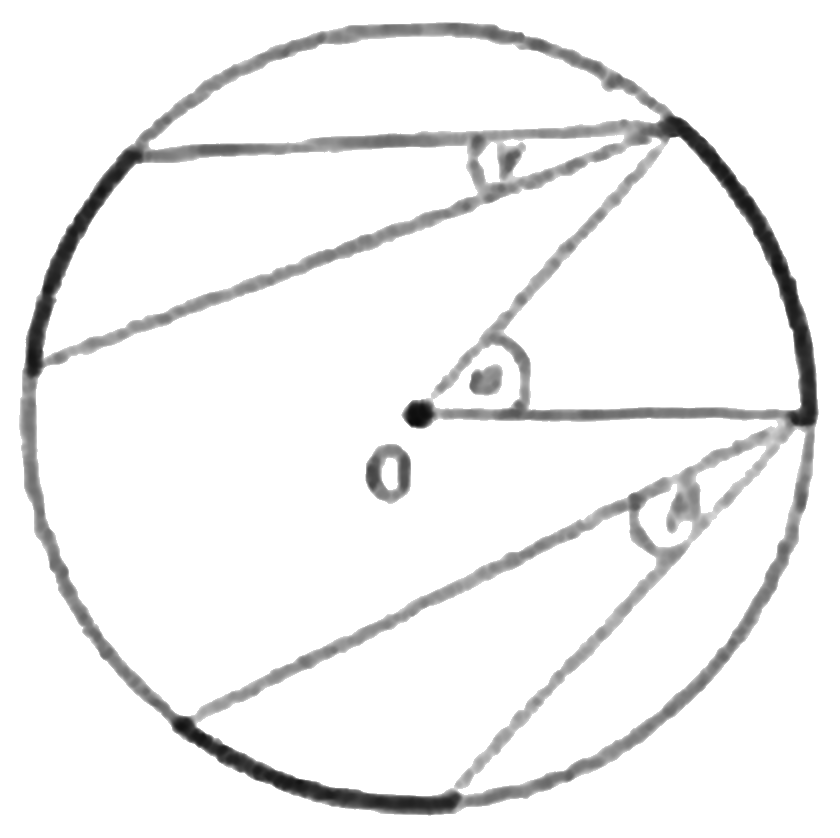

אופק, עידן, איתי ודקל הם ארבעה חברים שרכשו קובייה זהה. הקובייה מורכבת מ־27 קוביות קטנות הזהות זו לזו.
אופק הוציא מהקובייה שלו את הקובייה המסומנת ב־1. עידן הוציא את הקובייה המסומנת ב־2. איתי הוציא את הקובייה המסומנת ב־3. דקל הוציא את הקובייה המסומנת ב־4.
שטח הפנים החדש של הקובייה של ___ הוא הגדול ביותר, ושטח הפנים החדש של הקובייה של ___ הוא הקטן ביותר.
הצגת הפתרון
התשובה הסופית4תשובה (4)איתי ; אופק
דרך הפתרון והסבר
הוצאת קובייה מפינה: −3 + 3 = 0. ממקצוע: −2 + 4 = +2. ממרכז פאה: −1 + 5 = +4. מבפנים: +6. איתי הוציא את המרכזית ביותר, ואופק את הפינתית.
מוקשים נפוצים
קובייה מבפנים מוסיפה 6 פאות.
נבדקהפתרון תואם את מפתח התשובות של הספר.
מיקומי הקוביות לפי הסרטוט.
שאלה 3
ליונתן שני שקים ובכל אחד מהם קובייה אחת הוגנת. על הקובייה הראשונה מופיעות האותיות של המילה "בהצלחה" (אות אחת על כל פאה). על הקובייה השנייה מופיעות האותיות של המילה "בבחינה" (אות אחת על כל פאה). יונתן בוחר שק באקראי ואז מוציא את הקובייה ומטיל אותה.
מה הסיכוי שתוצאת ההטלה של יונתן היא האות ב'?
הצגת הפתרון
התשובה הסופית4תשובה (4)14
דרך הפתרון והסבר
"בהצלחה": ב' אחת מ־6. "בבחינה": שתי ב' מ־6. ½(16 + 26) = ¼.
מוקשים נפוצים
לשקלל את שני השקים בסיכוי ½ כל אחד.
נבדקהפתרון תואם את מפתח התשובות של הספר.
שאלה 4לבדיקה
מגליל שגובהו ½ ס"מ ורדיוסו 2 ס"מ הוציאו פרוסה בת 120°. P ו־O הם מרכזי המעגלים המהווים את בסיסי הגליל. לפי נתונים אלו ונתוני הסרטוט, מה שטח הפנים של הגוף שלפניכם (בסמ"ר)?
הצגת הפתרון
התשובה הסופית4תשובה (4)2 + 6⅔π ⚠
דרך הפתרון והסבר
נשארו 240°. בסיסים: 2 · ⅔ · 4π = 5⅓π. מעטפת: ⅔ · 2π · 2 · ½ = 1⅓π. שני מלבנים: 2 · 2 · ½ = 2. סה"כ 2 + 6⅔π.
מוקשים נפוצים
לא לשכוח את שני המלבנים שנחשפו בחיתוך.
נבדקהפתרון תואם את מפתח התשובות של הספר.
שאלה 5
לחברת אחזקות 20 משרדים אותם הם משכירים בשכירות חודשית של 2000 שקלים למשרד אחד. במהלך השנה 3 משרדים נזקקו לשיפוץ נרחב שארך 3 חודשים, ו־2 משרדים נוספים נזקקו לשיפוץ נרחב שארך חודש וחצי. במהלך חודשי השיפוץ המשרדים לא הושכרו.
אם המשרדים היו מושכרים במשך כל חודשי השנה (ללא שיפוצים), כמה מהם היו דרושים כדי להגיע למספר הכולל של חודשי ההשכרה ש־20 המשרדים השכרו בפועל?
הצגת הפתרון
התשובה הסופית4תשובה (4)19
דרך הפתרון והסבר
240 − 3·3 − 2·1.5 = 228 חודשי השכרה ⇒ 22812 = 19.
מוקשים נפוצים
לחשב חודשי השכרה בפועל.
נבדקהפתרון תואם את מפתח התשובות של הספר.
שאלה 6
צינור מילא 80% מבריכה אחת ועוד 40% מהבריכה השנייה. בסה"כ מילא הצינור 22 מ"ק מתוך 40 מ"ק. כמה מ"ק מכילה הבריכה השנייה?
הצגת הפתרון
התשובה הסופית3תשובה (3)25
דרך הפתרון והסבר
A + B = 40, 0.8A + 0.4B = 22 ⇒ 0.4A = 6 ⇒ A = 15, B = 25.
מוקשים נפוצים
לפתור מערכת של שתי משוואות.
נבדקהפתרון תואם את מפתח התשובות של הספר.
שאלה 7לבדיקה
בסרטוט שלפניכם מערכת צירים בה הועברו 3 ישרים. המשולשים GED ו־AFB חופפים. נתון: AF = FG = GE. סכום שטחי המשולשים GDE, FCG ו־ABF הוא 24 סמ"ר.
לאור נתונים אלו ונתוני הסרטוט, מה מהבאים יכול להיות שיעורי הנקודה B?
הצגת הפתרון
התשובה הסופית3תשובה (3)(−4,−3)
דרך הפתרון והסבר
מחשבים את שטח המשולשים מחלוקת הישר לשלושה קטעים שווים ובודקים אילו שיעורים מתאימים לסכום 24.
מוקשים נפוצים
הסרטוט לא קריא – לבדוק בספר.
דורש בדיקההמקור לא חד או סותר את המפתח. התשובה המוצגת היא לפי מפתח הספר.
הסרטוט חיוני ולא ניתן לשחזר את הקווים. התשובה לפי המפתח: (−4, −3).
שאלה 8
a ו־b הם שברים חיוביים. נתון: ab = 6
איזו מבין הטענות הבאות נכונה בהכרח?
הצגת הפתרון
התשובה הסופית4תשובה (4)(1a)² − (1b)² < 0
דרך הפתרון והסבר
a = 6b > b > 0 ⇒ 1a < 1b ⇒ (1a)² − (1b)² < 0.
מוקשים נפוצים
a > b ⇒ 1a < 1b.
נבדקהפתרון תואם את מפתח התשובות של הספר.
שאלה 9

בסרטוט שלפניכם מעגל שמרכזו O ורדיוסו R ס"מ.
על פי נתונים אלו והנתונים שבסרטוט, מה סכום אורכי הקשתות המודגשות?
הצגת הפתרון
התשובה הסופית3תשובה (3)(α+2β+2γ)πR180°
דרך הפתרון והסבר
זווית מרכזית α נשענת על קשת α; זוויות היקפיות β ו־γ נשענות על קשתות 2β ו־2γ. אורך קשת = θπR180 ⇒ (α + 2β + 2γ)πR180.
מוקשים נפוצים
זווית היקפית נשענת על קשת כפולה.
נבדקהפתרון תואם את מפתח התשובות של הספר.
סוגי הזוויות לפי הסרטוט.
שאלה 10
משפחה בת 5 נפשות (אבא, אמא, שתי בנות ובן) ממתינה בתור למגלשת מים. האם לא מוכנה לגלוש ראשונה במגלשה, והאחיות דורשות להתגלש יחדיו (אחת אחרי השנייה).
בכמה דרכים שונות יכולה המשפחה להסתדר לצורך גלישה במגלשת המים?
הצגת הפתרון
התשובה הסופית3תשובה (3)36
דרך הפתרון והסבר
האחיות כיחידה: 4! · 2 = 48. מורידים את הסידורים שבהם האם ראשונה: 3! · 2 = 12 ⇒ 36.